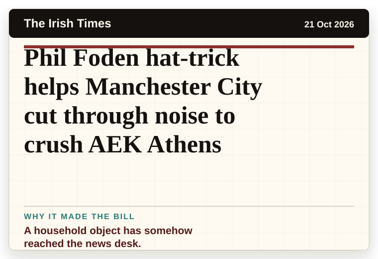
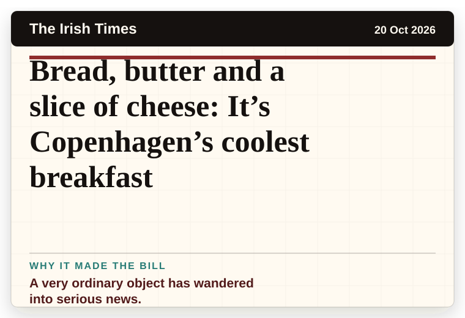
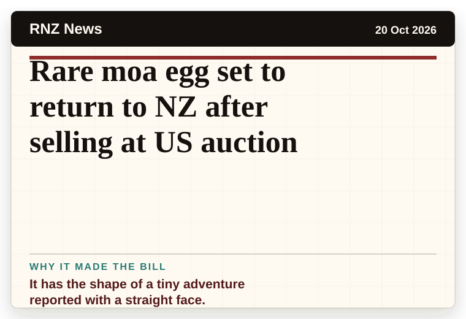

Mirror Weird News
United Kingdom
Audiologist says limit earphone use to 60 minutes a day and eat chocolate
A very ordinary object has wandered into serious news.
The latest daily picks, linked back to the original sources. Search the room, pick a source, or follow a headline out to the full story.
Record updated: 21 Oct 2026, 07:39 AM AEST
Showing 13 headline candidates from the refresh run completed on 21 Oct 2026, 07:39 AM AEST.
A very ordinary object has wandered into serious news.

A wonderfully specific detail has taken centre stage.

A wonderfully specific detail has taken centre stage.

A very ordinary object has wandered into serious news.

The scale is doing deadpan comedy.

The headline is already trying not to laugh.

A wonderfully specific detail has taken centre stage.

A mystery is doing a lot of work in a very small sentence.

The word chaos gives it open-mic energy.

The scale is doing deadpan comedy.

A household object has somehow reached the news desk.

A very ordinary object has wandered into serious news.

It has the shape of a tiny adventure reported with a straight face.